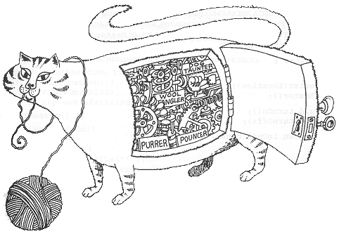
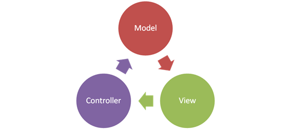
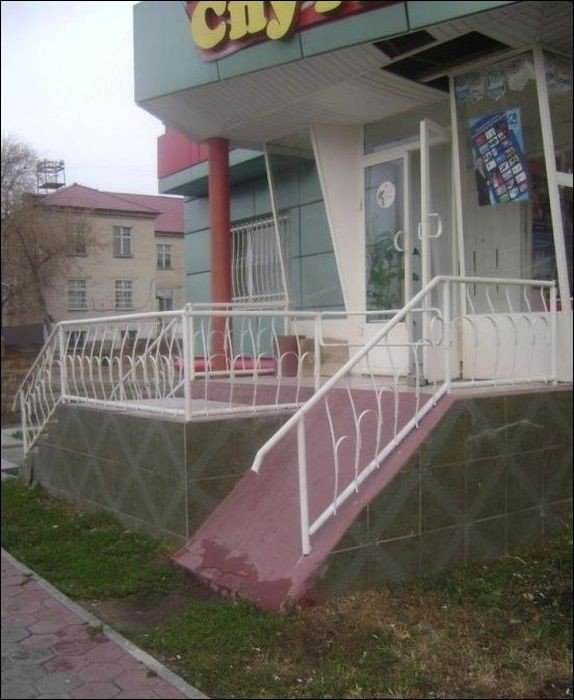

О себе
- 8 лет занимаюсь фреймворком Yii и другим открытым кодом.
- Параллельно работал над коммерческими проектами.
- Участвую в PHP-FIG.
- Автор нескольких книг и rmcreative.ru.
- Сейчас тимлид в Skyeng.
Архитектура?
Ряд решений о том, как взаимодействуют отдельные части системы (в том числе люди). Это, в основном, глобальные решения, которые тяжело изменить потом.
- На какие элементы разбить код?
- Как эти элементы взаимодействуют?
- Кто и за что отвечает.
Архитектура — это про соглашения, интерфейсы, контракты и абстракцию. Не про код и конкретную реализацию.
Что такое интерфейс?
Наследование знают все. А что такое инкапсуляция и полиморфизм? Какой их смысл?
Фреймворк — не архитектура
Он не построит архитектуру за вас.
Фреймворк ничего не знает об элементах вашего приложения и не может определить интерфейсы для взаимодействия этих элементов.
Но может дать начальный шаблон и инфраструктуру. В случае Yii это MVC.
basic/advanced — не догма и не шаблон полноценной архитектуры
Кстати, про MVC...
Controller
- Принимает данные извне (GET, POST, консольный ввод, ...).
- Отдаёт данные в нужном виде в Model и View.
- Не реализует логику, не занимается форматированием или формированием ответа.
View
- Получает подготовленные контроллером данные.
- Форматирует данные для ответа.
- Никогда не работает с внешними данными, базой или пользовательским вводом напрямую.
Model
- Не Model в Yii! Не ActiveRecord!
- M в MVC - не один класс, а целый доменный слой (вся логика приложения).
- Получает подготовленные контроллером данные, обрабатывает их, возвращает результат.
- Никогда не работает с внешними данными или пользовательским вводом напрямую.
- Не занимается форматированием или формированием ответа.
Паттерны проектирования — не архитектура.
Это проверенные варианты решения более-менее распространённых проблем. У каждого паттерна есть как плюсы, так и минусы.
Даже правильно релизованные паттерны легко использовать неправильно.
Зачем нужна архитектура?
Для борьбы со сложностью.
Цель — сделать понятным каждый уровень абстракции.
- Для изменения под реалии бизнеса.
- Чтобы не приходилось всё переписывать с нуля.
- Сделать с первого раза хорошо — это не просто.
Хорошая архитектура — это дорого. Плохая — еще дороже.
"If you think good architecture is expensive, try bad architecture"
– Brian Foote and Joseph Yoder
SOLID
Ещё одна модная аббревиатура...
Single Responsibility
Класс должен делать что-то одно.
Open-closed
Класс или модуль (несколько связанных классов) должен скрывать детали реализации (то есть как именно он работает внутри), но иметь чётко определённый интерфейс, который позволяет как использовать модуль или класс (public методы), так и расширять его наследованием (protected и public методы).
Liskov substitution
Принцип об иерархии и наследовании. Классическое определение очень запутанное. Можно проще.
Когда мы реализовываем новый класс, наследуясь от существующего, новый должен быть с тем же интерфейсом и вести себя абсолютно так же в тех же ситуациях. Так, чтобы программа работала, если подсунуть ей как родителя, так и наследника.
Interface segregation
Интерфейс не должен определять больше функциональности, чем используется за один раз. Это как Single Responsibility, только для интерфейсов. Если интерфейс описывает больше одной задачи, разбиваем его на несколько интерфейсов.
Dependency inversion
Класс должен объявлять зависимости (то, что ему нужно) через интерфейсы, но никогда не получать их самостоятельно.
Где-то это уже было...
Хорошие и плохие зависимости
- Cohesion - связность.
- Coupling - связанность.
Cohesion
Степень единства элементов модуля.
Coupling
Степень взаимной зависимости модулей / классов.
Cohesion - хорошо. Coupling - плохо.
- Служащие одной цели классы собираются в модули (Не модули фреймворка! Не конкретные классы! Логические рамки).
- Внутри модуля используем его классы напрямую. Нет смысла абстрагироваться.
- Используемые модулем классы, но не связанные с ним, используются только через интерфейсы.
- Модулю наплевать на то, как он получит зависимости.
Довольно много мест в Yii сделаны не по SOLID. На то были причины.
Чтобы нарушать правила необходимо их знать и уметь соблюдать.
Попробуйте делать в своих проектах правильно.
Active Record
- Делает одновременно слишком много.
- Притягивает к себе и бизнес-логику и инфраструктурную логику.
- Позволяет достичь цели очень быстро.
- Удобен.
Переабстрагирование
Чрезмерное увлечение абстракцией может привести к тому, что каждый отдельный её уровень слишком прост, а взаимодействие уровней слишком сложно.
Документирование архитектурных решений
Что описывать?
- Модули: структура компонентов.
- Компоненты и коннекторы: взаимодействие компонентов.
- Размещение: физическое распределение компонентов по серверам.
- Ответственность.
Чем описывать?
- Текст.
- UML.
- Простые диаграммы. Наример, в yEd.
Как сделать приложение надёжным?
Исправляю одно, отваливается другое...
TDD/BDD
Тестировать.
Ключевые места хорошей архитектуры не должно быть сложно тестировать.
Засуньте тесты в CI!
Архитектура зависит в большей степени от предметной области и нужд компании, чем от применяемых фреймворков и библиотек.
DDD
Domain Driven Design
Программист недостаточно знает автоматизируемый им процесс.
Есть человек, который знает его от и до. Это — доменный эксперт.
- Большие богатые не логику проекты (> 6 месяцев).
- Цель — получить архитектуру, близкую к реальному процессу.
- Использовать термины реального процесса.
Структурные блоки
- Value object — значение, которое может включать в себя другие значения.
- Entity — объекты, которые можно идетифицировать. Взяв два объекта и сравнив их, можно определить, тот же это объект или нет.
- Aggregate — группа объектов. Имеет главный Entity, без которого вся группа не имеет смысла (root). Транзакционно целостна.
Доменный слой не зависит ни от чего.
Главные паттерны
- Repository — сохраняет чистые объекты и загружает их. Чаще всего речь идёт про базу данных. Не AR! Иногда его бьют на Command и Query.
- Доменный сервис — использует entity для какой-то полезной работы. Всё ещё не зависит ни от чего вне домена.
- Сервис приложения — предоставлятся фреймворком (components). Может использовать доменный сервис для работы с доменом.
DDD действительно нужен не часто
- Сложно.
- Оверхед.
- Абстрактно.
- Плохо натягивается на "бедный" домен.
Изучать стоит!
Можно перенять частично
- Понятные конкретные методы в AR, работающие с инстансом.
- Отдельные модели для форм.
- Сервисы.
- ActiveQuery.
Почитать
- Руководство Microsoft по проектированию архитектуры приложений
- Domain Driven Design Quickly (InfoQ)
- Implementing Domain-Driven Design - Vaughn Vernon
- Domain-Driven Design Distilled - Vaughn Vernon
- Catalog of Patterns of Enterprise Application Architecture
- Clean Architecture
- Getting a SOLID start
Время вопросов!